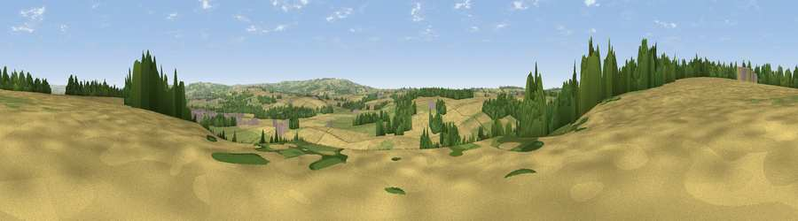

Viewpoint near High Hutton
#32676 in England · top 65% of its area beats it · near High HuttonThe view, rendered

A 360° render of this exact spot computed from the terrain model, tree cover and land cover — summer colours, afternoon light, calibrated against photographs of famous viewpoints. Real trees, hedges and buildings will differ in detail.
The panorama
Grey silhouette: terrain skyline in each direction (720 bearings, Earth curvature and refraction included). Dashed green: skyline with trees (+15 m) and buildings (+8 m) as obstacles. Blue strip: how far the ground is visible on each bearing.
Where the view opens
Wedge length = distance to the farthest visible ground on that bearing (vegetation-aware). Rings at 10, 25 and 50 km.
What fills the view
53% cropland · 30% grassland · 14% woodland · 2% built-up
Angular shares of the visible panorama (visual magnitude), not map area. Landscape diversity 0.46 (0–1 Shannon).
Key numbers
More beautiful places nearby
The staircase of upgrades: each row has a higher view potential than everything closer. Driving times are estimates from straight-line distance, calibrated against real road routing — check an actual route before setting out.
| Place | Direction | Drive | Score |
|---|---|---|---|
| Viewpoint near Amotherby | NW · 1 km | ~4 min | 65.5 |
| Viewpoint near Coneysthorpe | WNW · 4 km | ~10 min | 65.8 |
| Viewpoint near Birdsall | SE · 8 km | ~17 min | 71.8 |
| Viewpoint near Leavening | SSE · 9 km | ~18 min | 73.7 |
| Viewpoint near Acklam | SSE · 11 km | ~21 min | 73.8 |
| Viewpoint near Ampleforth | WNW · 18 km | ~31 min | 76.6 |
| Viewpoint near Kilburn | WNW · 27 km | ~43 min | 79.3 |
| Hood Hill | WNW · 27 km | ~44 min | 79.6 |
54.12637, -0.84352 · source: screening · position refined by local search. Computed location — check access rights before visiting.